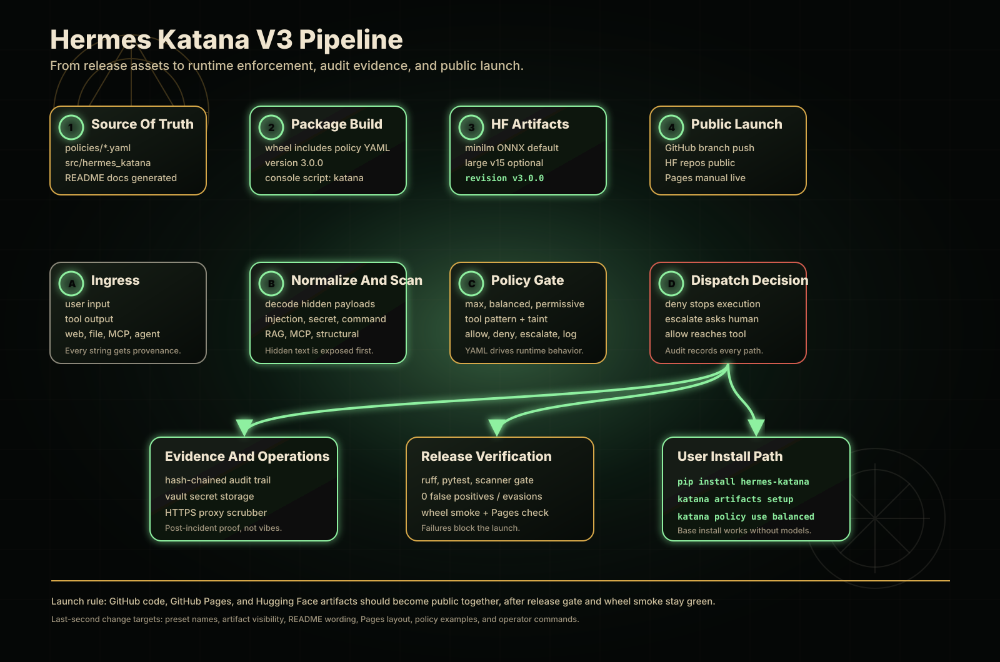

Ingress
User text, tool output, web/file content, MCP schemas, retrieved documents, and model output enter with origin context where possible.
taint/labels.pyInner function map
This page maps the repo from public install to runtime enforcement: where text enters, how provenance and scanners shape the decision, how YAML policy resolves the action, and which commands expose each part of the system.
One visual board
The top row is release readiness. The middle row is runtime enforcement. The bottom row is evidence, verification, and user setup. The rule is simple: GitHub code, GitHub Pages, and Hugging Face artifacts should become public together.

Runtime path
Hermes Katana does not try to make prompts magically safe. It puts a decision point around tool dispatch, then feeds that decision point with provenance, scanner findings, model signals, policy rules, and audit evidence.
User text, tool output, web/file content, MCP schemas, retrieved documents, and model output enter with origin context where possible.
taint/labels.pyHidden payloads are decoded before scanning: base64, URL encoding, HTML entities, Unicode spoofing, document metadata, and embedded carriers.
scanner/decoder.pyScabbard, ProtectAI, heuristic scanners, structural scanners, RAG/MCP detectors, and multi-turn checks add risk signals.
middleware/integration.pyPolicy resolves the current tool call to allow, deny, escalate, or log-only. Audit records the path even when execution is blocked.
policy/engine.pyDefault middleware order
Higher priority middleware runs first. A deny short-circuits execution. Escalations continue collecting context so a caller can decide whether a human review is needed.
Scabbard normalizes text, extracts multi-signal features, and classifies before pattern scanners run. A high-confidence block can stop the tool call before later layers spend time on detailed checks.
scabbard/scabbard.pyPolicy needs context from earlier layers: taint sources, command safety, scanner findings, route decisions, and risk scores. It is the resolver, not the first sensor.
policy/engine.pyScanner system
The scanner layer is deliberately broad. It handles text, commands, output, binary file bytes, document metadata, URLs, encoded carriers, and multimodal payloads without requiring a remote API.
Instruction override, role hijack, delimiter escape, prompt leak attempts, encoded payloads, multilingual forms, and persona manipulation.
scanner/injection.pyDangerous terminal intent: destructive deletes, reverse shells, pipe-to-shell, privilege escalation, container escape, mining, and network scanning.
scanner/commands.pyAPI keys, JWTs, private keys, database URLs, high-entropy blobs, and encoded or chunked secret material.
scanner/secrets.pyHTML hidden text, Markdown tricks, PDF layers and JavaScript, OOXML metadata, SVG payloads, image text chunks, and steganography indicators.
scanner/structural.pyRetrieved-document prompt injection, context manipulation, tool hijack, poisoned embedding text, MCP schema drift, and hidden tool instructions.
scanner/rag_injection.pyBidi overrides, zero-width text, homoglyphs, mixed scripts, ANSI injection, homograph URLs, markdown exfil paths, and suspicious browser content.
scanner/unicode.pyScabbard classifier
Public checkouts work without bundled private model files. When optional artifacts are present, Scabbard can use them. When they are missing, it still falls back to lightweight signals instead of making the whole runtime unusable.
Transforms suspicious text into a consistent view and records anomaly flags that can boost downstream risk.
scabbard/normalizer.pyCombines intent divergence, centroid similarity, perplexity shifts, n-gram signals, encoding flags, and optional retrieval features.
scabbard/feature_extractor.pyUses the configured Katana classifier artifact, legacy DeBERTa, or lightweight fusion depending on runtime profile.
scabbard/fusion.pyPolicy resolver
Built-in presets come from policies/*.yaml. The engine sorts policies by
priority, matches the tool name by glob, evaluates every condition in a rule, and returns
the first matching action.
| Action | Runtime effect | Typical reason |
|---|---|---|
allow |
The middleware chain may continue to execution. | Clean route, trusted or acceptable source, and no blocking scanner/policy condition. |
deny |
Execution stops before the tool runs. | Dangerous command, secret exfil path, tainted critical sink, or explicit max/balanced rule. |
escalate |
The call is marked for review instead of silently trusted. | Unknown or sensitive route where the right answer depends on operator intent. |
log_only |
The event is recorded while execution is allowed. | Permissive workflows where visibility is wanted but blocking would be too disruptive. |
Commands and pipeline reference
These commands are the public control surface. The notes under each command explain which part of the runtime pipeline it exercises, so a new user can connect CLI behavior to the internals shown above.
pip install hermes-katana installs the base package without large local model artifacts.katana doctor checks Python, optional dependencies, paths, policy files, and runtime readiness.katana status shows the local security configuration and active environment state.katana version prints the installed package version for support and troubleshooting.katana policy list shows available presets and the currently selected policy set.katana policy use balanced selects a runtime preset from the YAML policy source of truth.katana scan TEXT runs prompt-injection, secret, Unicode, content, and structural checks on text.katana scan-command CMD evaluates terminal intent before a command reaches execution.katana vault set NAME stores a secret handle outside prompt text.katana vault list confirms which handles exist without printing secret values.katana audit show reviews allow, deny, escalate, and log-only decisions.katana proxy start starts optional HTTPS egress inspection when proxy dependencies are installed.katana artifacts status --all reports which optional local model artifacts are present.katana artifacts setup --yes downloads the default fast CPU artifact when wanted.katana install --target PATH patches a compatible Hermes checkout.katana run --target PATH -- ... runs Hermes through the Katana-protected dispatch path.Input enters through CLI, plugin, tool output, file, web, MCP, or retrieved content. Taint labels preserve source context so the same text can be treated differently by origin.
Normalizers expose hidden payloads, Scabbard and scanners add risk signals, policy resolves the action, and middleware either blocks, escalates, logs, or allows dispatch.
Vault keeps secrets out of prompts, proxy can inspect egress, audit records decisions, and optional artifacts add local classifier capability without bloating the base install.